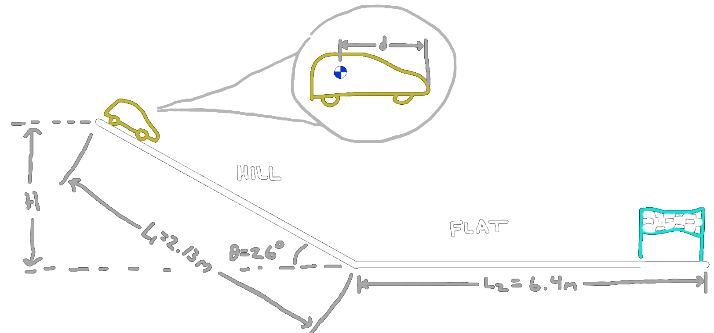
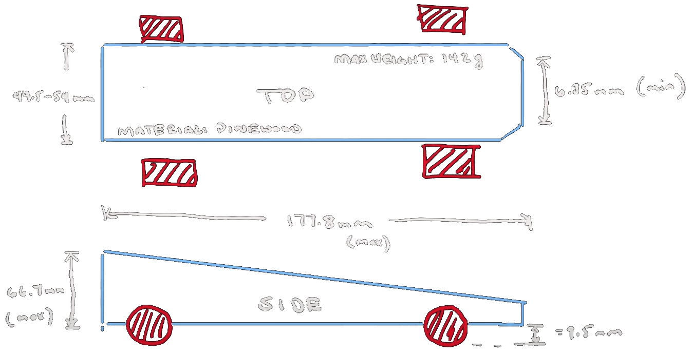
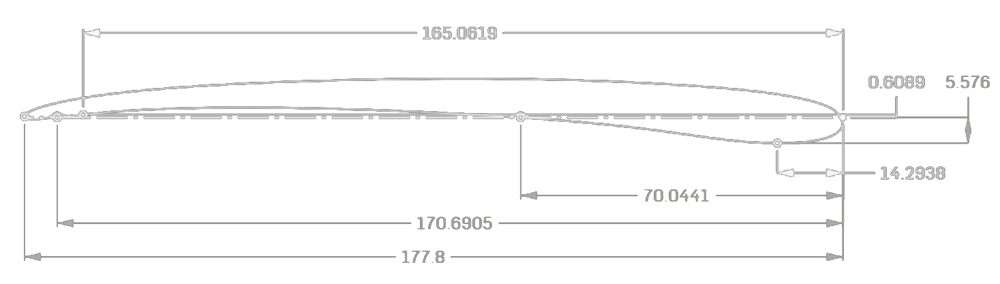
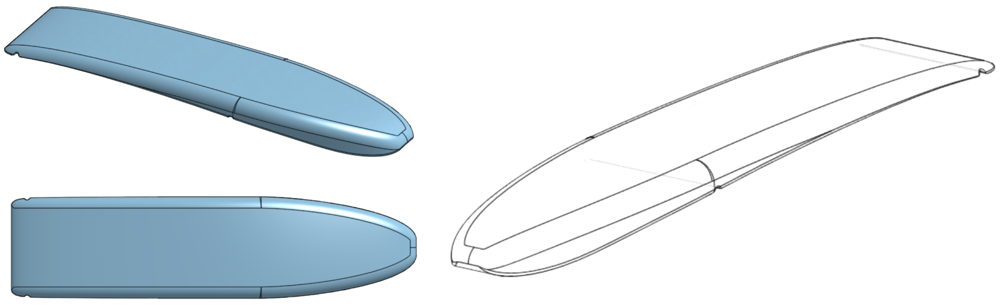
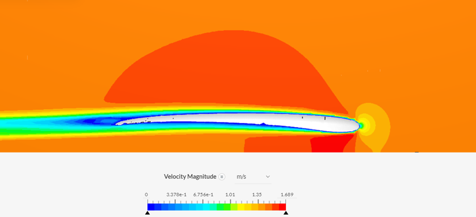

Pinewood Derby Challenge
Project Scope
The goal of this project was to design a pinewood derby car with the assistance of computational fluid dynamics software to create a car with low drag and high lift. The success of the car was measured by computing the theoretical time the car would take to reach the finish line and comparing it to all other designs submitted across the Fluid Mechanics II class.
Competition Rules
The following design restrictions were placed on the design of the car in accordance with typical Pinewood Derby rules. In addition to the vehicle dimensions, the track is also customized for this project and features a ramped hill section and a flat straightaway before reaching the finish line.
Final Design
The design of this vehicle was created after several iterations requiring a balance of several key performance parameters:
Potential Energy
Most importantly, the center of mass of the vehicle needed to be as far back from the leading edge as possible to ensure that the car accelerates down the inclined ramp section of the track for longer and therefore has more speed when reaching the flat straightaway. Given that an added point mass was allowed to be included in the design, this meant having a small vehicle profile to minimize the starting mass and allow the center of mass location to be moved towards the rear wheel well. Note that the rear wheel position needed to also be moved further back as to allow the car to remain balanced.
Friction
The friction of the axles against the wheels of the car must be minimized throughout the race. As this geometry is fixed by competition rules, the effective normal force of the car against the track must be minimized which means maximizing the lift of the vehicle.
Air Resistance
Throughout the duration of travel, the air resistance will decelerate the vehicle so the drag force must be minimized. This meant minimizing the effective projected area of the car and minimizing the overall drag coefficient.
In the final design, these considerations were used to create the car profile shown above. This design is a long, slender airfoil design created to place the center of mass almost on top of the rear axle for maximum potential energy storage, a thin body shape to reduce the viscous drag forces, a cambered airfoil profile to maximize lift, and a bulbous nose to further increase the aerodynamics of the vehicle. The design was modelled using OnShape and was nicknamed the Orca5 given the resemblence of the nose shape to that of an Orca whale and the design being the fifth major iteration.
Performance
Given the complexity of the track and the vehicle dynamics, software was written to solve for the total runtime of the race based on precalculated lift and drag coefficients, vehicle geometry, and mass properties. The dynamics of the race are simplified by assuming the car is dominated solely by potential energy during the ramp portion, and during the flat straightaway, operates at a fixed lift and drag coefficient. This greatly simplifies the vehicle dynamics to just two equations corresponding to each section of the track.
Using these equations, a fourth-order Runge-Kutta simulation was developed to determine the speed of the car at each timestep and therefore, compute the car's position throughout the race. With accurate lift and drag coefficients from SimScale computational fluid dynamics analysis, and mass/geometry properties calaculated from the CAD model in OnShape, the simulation can be refined to determine the exact expected runtime.
With the above analysis, a SimScale CFD simulation was perfomed (laminar steady-state model) to determine that the vehicle should generate just 0.14mN of lift force and 0.20mN of drag. While these are poor performing values for an airfoil, the complex dynamics show that this design was one of the most optimized given the small profile and center of mass location. Based on the simulated race time, a calculated time of t = 1.692429s was found for the vehicle. From the complete class dataset, this Pinewood Derby design was granted a trophy for being one of the top three fastest designs of the class.